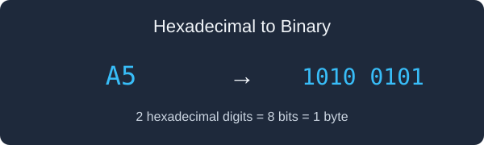

Understanding Hexadecimal (Base 16)
Hexadecimal is a base-16 number system widely used in computing, networking, and cybersecurity. It provides a compact way to represent binary data using the digits 0–9 and letters A–F.
How Does Hexadecimal Work?
Hexadecimal is a positional number system with a base of 16. Unlike decimal, which uses ten digits, hexadecimal uses sixteen symbols: 0-9 and A-F.
Hexadecimal Digits
The letters A through F represent decimal values from 10 to 15.
- A = 10
- B = 11
- C = 12
- D = 13
- E = 14
- F = 15
Converting Hexadecimal to Decimal
Each position in a hexadecimal number represents a power of 16, starting from the right with 16^0.
Example: Convert 2F to Decimal
- Identify the digits: 2 and F (15).
- Multiply 2 by 16^1 = 32.
- Multiply 15 by 16^0 = 15.
- Add the results: 32 + 15 = 47.
Therefore, hexadecimal 2F equals decimal 47.
Hexadecimal and Binary
Each hexadecimal digit represents exactly four binary bits. This makes hexadecimal a compact and readable way to represent binary data.
Example: FF in Binary
- F = 1111 in binary.
- FF = 1111 1111 in binary.
- Eight bits represent one byte.
- FF = 255 in decimal.
Hexadecimal is commonly used to represent bytes, memory addresses, and network addresses.

Real-World Applications of Hexadecimal
Hexadecimal is widely used in computing because it provides a compact representation of binary data.
Common Applications
- MAC Addresses: Network interfaces use hexadecimal notation for addresses such as 00:1A:2B:3C:4D:5E.
- IPv6 Addresses: IPv6 uses hexadecimal notation, for example 2001:db8::1.
- Memory Addresses: Hexadecimal is commonly used to display memory locations, such as 0x7FFF.
- Web Colours: CSS uses hexadecimal colour codes, such as #38bdf8.
- Cybersecurity: Hexadecimal is used when analysing binary files, network packets, and memory dumps.